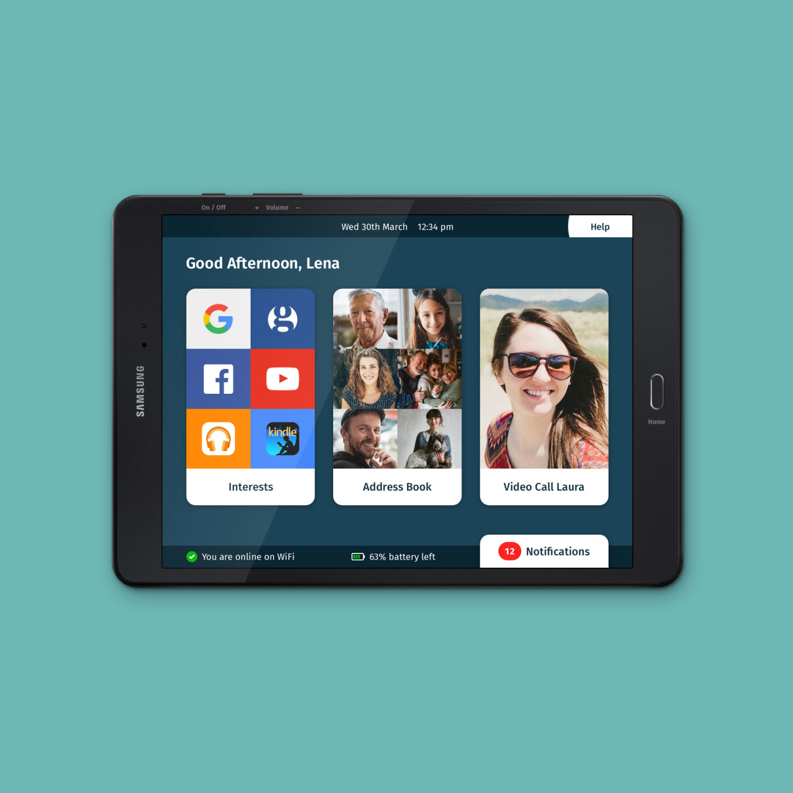
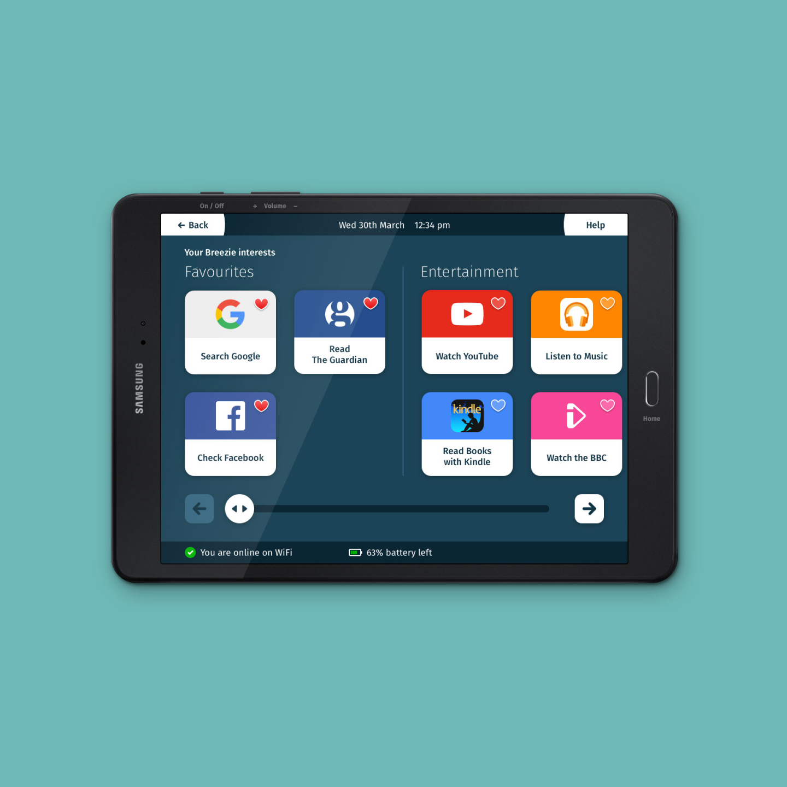
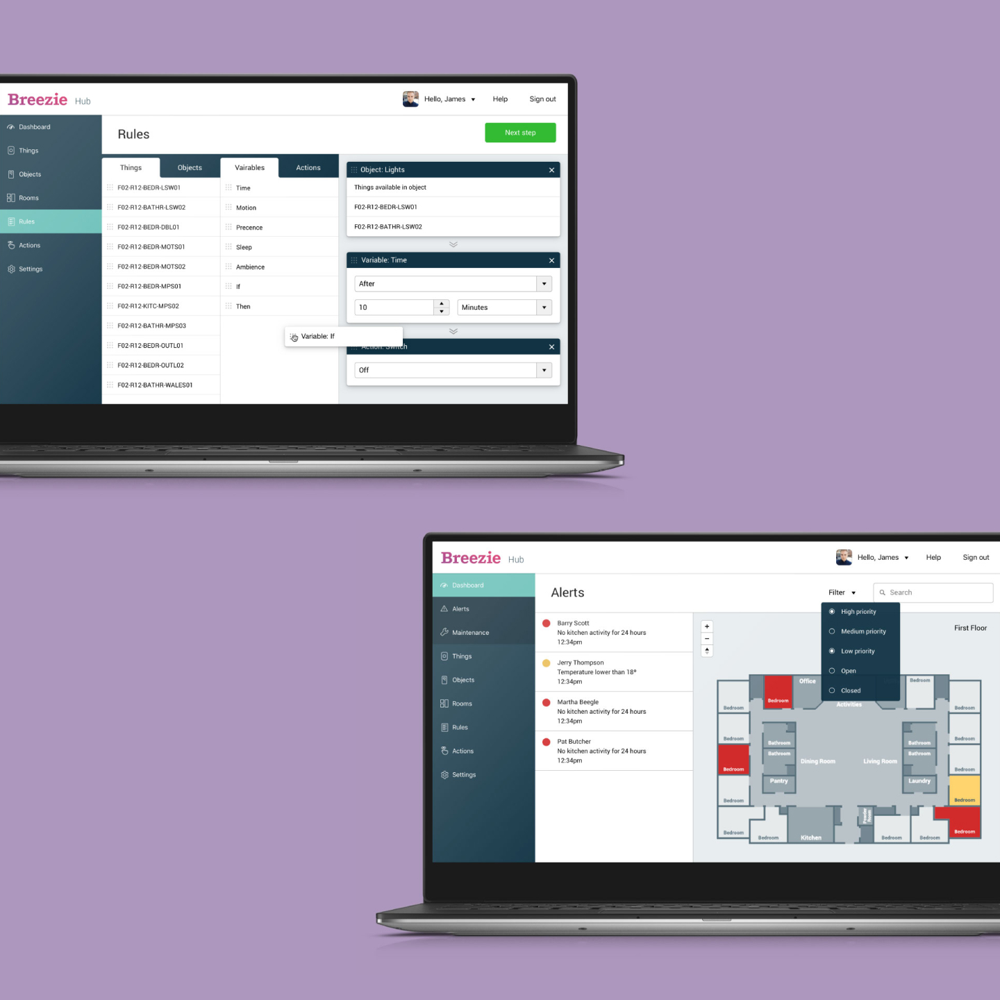
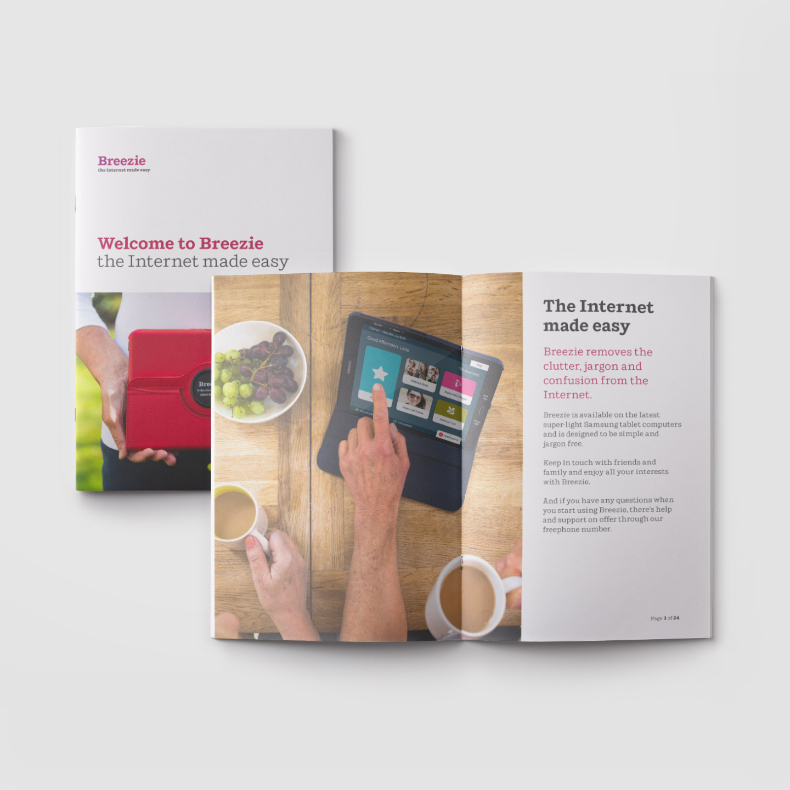
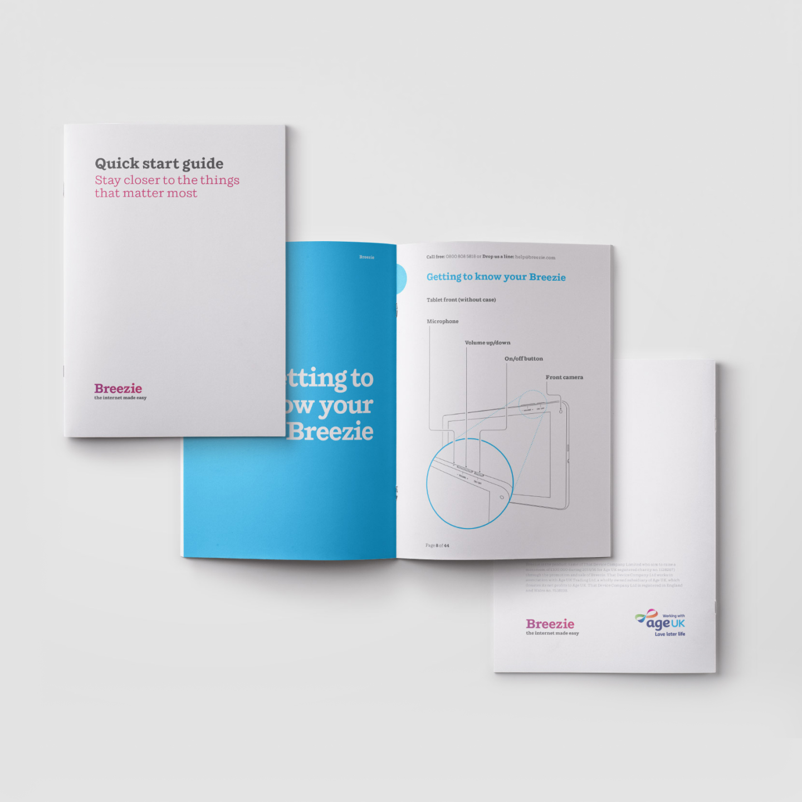
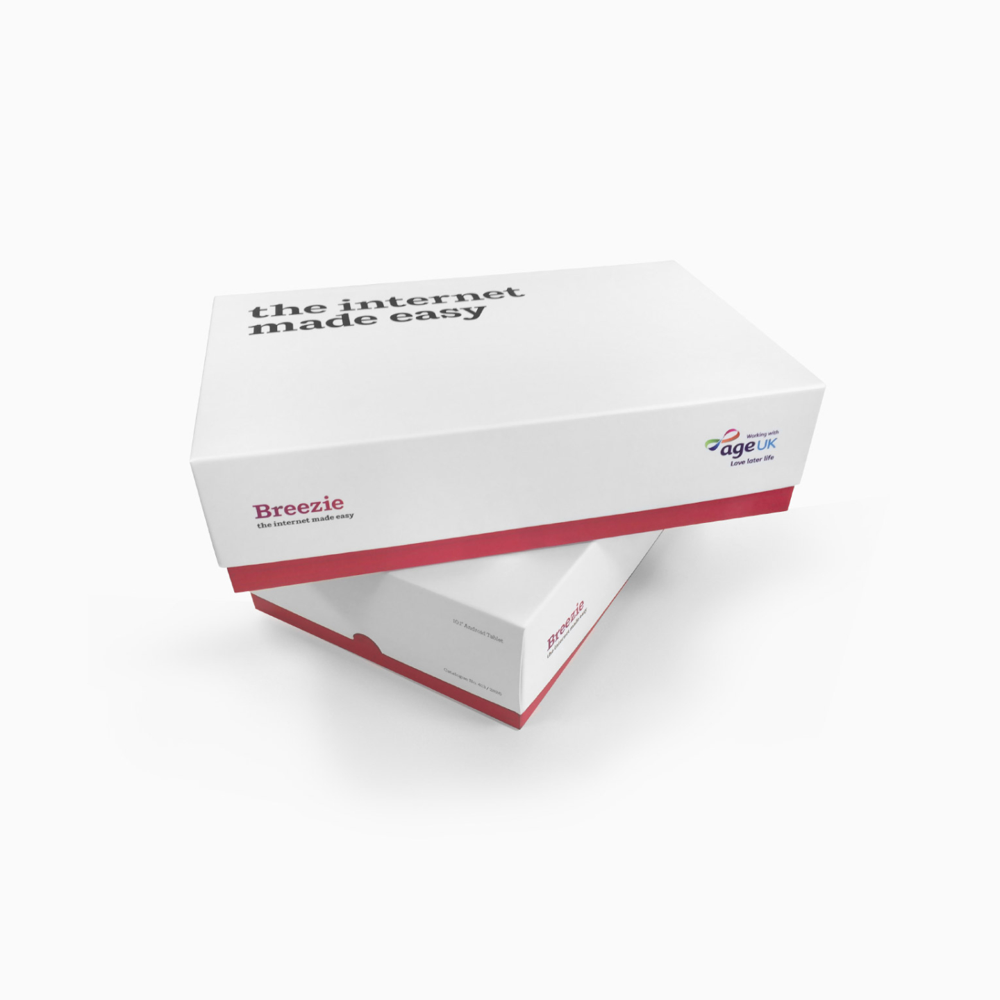
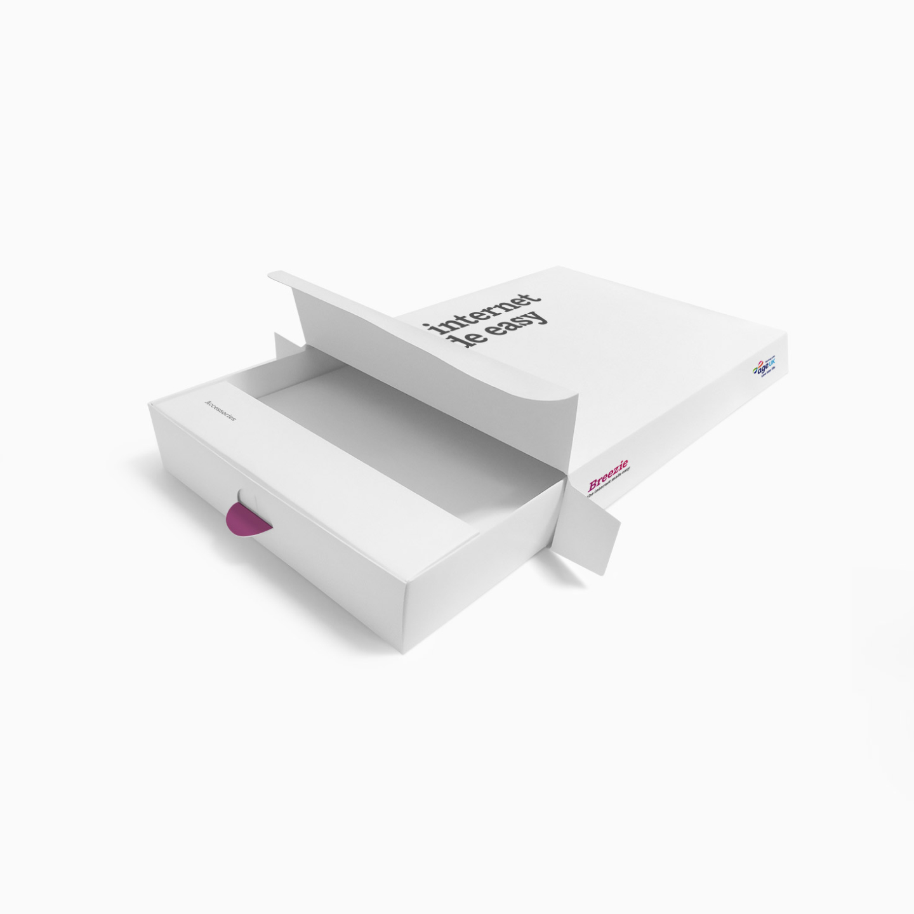
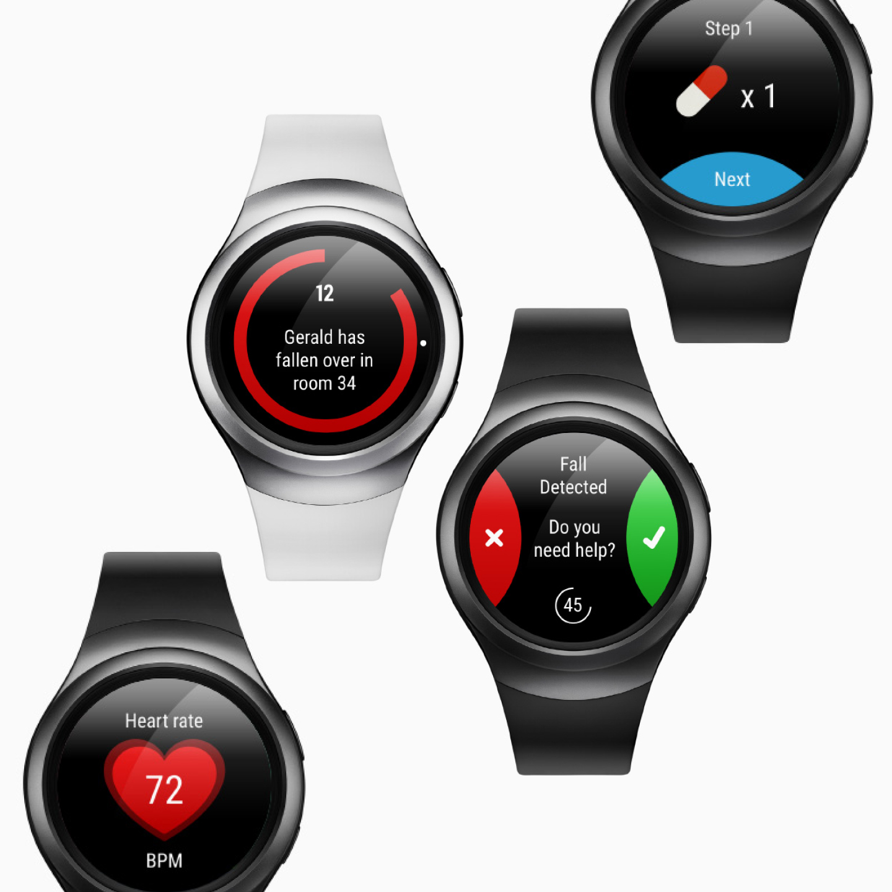
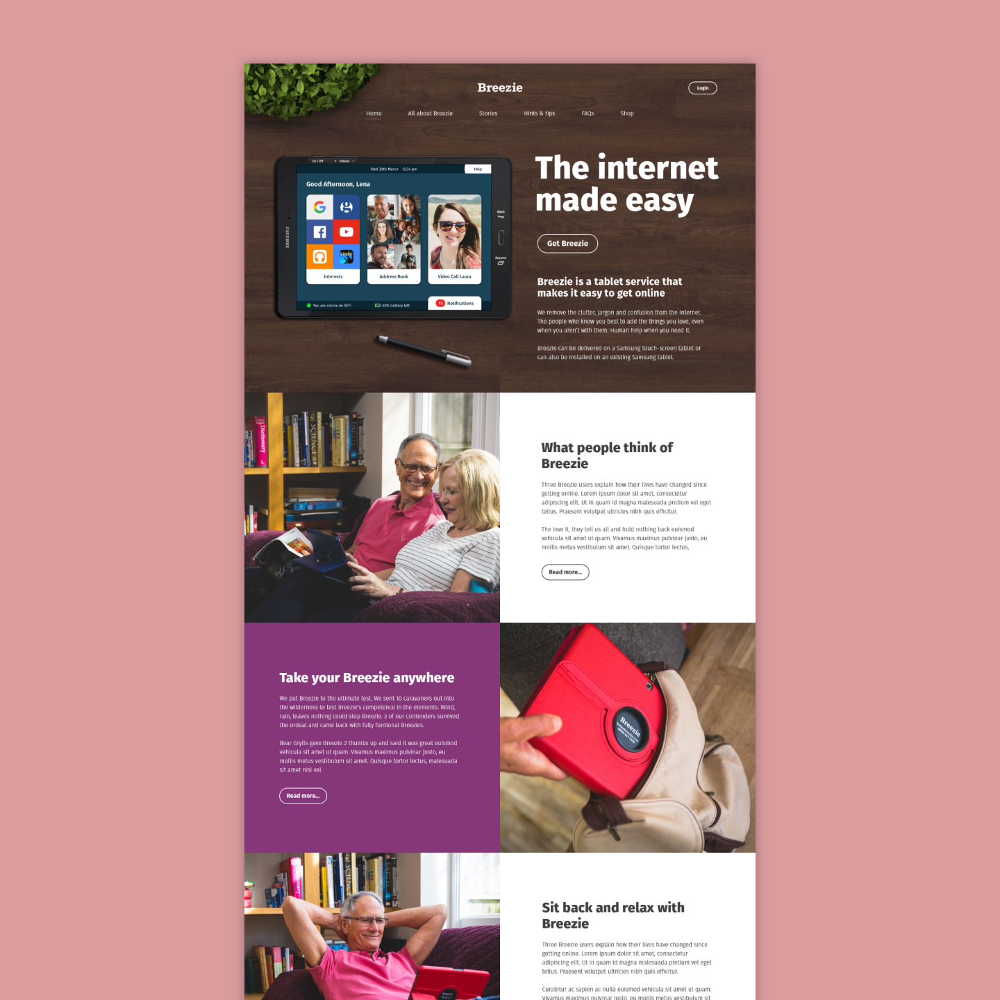
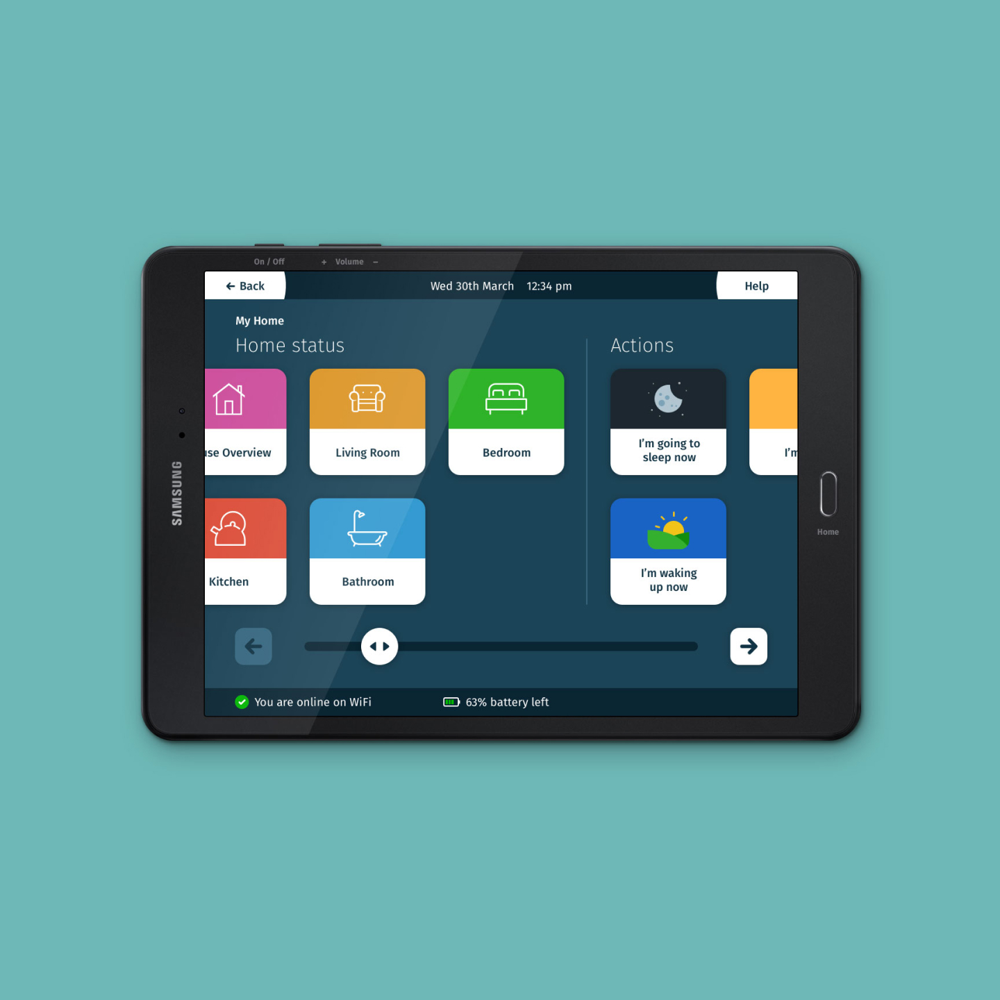

Breezie
Redesigned the UX/UI for Breezie, an Android OS tailored to help thousands of elderly and disabled users confidently navigate digital products. Focused on scalable accessibility and simplicity, improving quality of life and digital independence. Designed a SmartThings dashboard for care homes, and created packaging and printed materials that contributed to increased sales and positive media coverage increasing product sales by 4x.










What I did
- Collaborated with another designer to overhaul the UX and UI design from the ground up.
- Conducted user research with elderly users of the old OS and those who avoided using tablets/computers to identify pain points and opportunities for improvement.
- Designed a scalable interface that started with limited functionality for beginners and gradually introduced more features as users became familiar with the system.
- Created a family-managed CMS for relatives to add or remove features based on the user's needs and preferences.
- Designed a Samsung SmartThings dashboard portal for care homes, enabling administrators to monitor and control devices on a large network.
- Developed intuitive rule-setting tools for administrators to manage devices in care homes or private residences.
- Designed packaging, manuals, and printed materials to ensure a cohesive and user-friendly experience from unboxing to daily use.
Key challenges and solutions
Accessibility for elderly and disabled users: Challenge: Many elderly and disabled users found traditional tablets and computers difficult to use.
- SolutionDesigned a simplified, intuitive interface with large buttons, clear typography, and step-by-step guidance.
Scalability for beginnersChallenge: Users unfamiliar with digital devices needed a system that could grow with their skills.
- SolutionCreated a scalable interface that started with basic functionality and allowed features to be added over time.
Family-managed customisationChallenge: Relatives needed a way to customise the system for users without overwhelming them.
- SolutionDesigned an online CMS for family members to add or remove features based on the user's needs.
Care home device managementChallenge: Administrators needed an intuitive way to monitor and control devices in care homes.
- SolutionDesigned a Samsung SmartThings dashboard portal with tools for creating rules and managing devices.
Cohesive brand experienceUsers needed a seamless experience from unboxing to daily use.
- SolutionDesigned packaging, manuals, and printed materials that were easy to understand and aligned with the system's design.
Outcome
- Improved usabilityElderly and disabled users found the new system more intuitive and accessible.
- Scalable interfaceUsers could start with basic features and gradually unlock more functionality as they became comfortable.
- Family involvementRelatives could easily customise the system to meet the user's needs, improving adoption and satisfaction.
- Efficient device managementCare home administrators could monitor and control devices more effectively using the SmartThings dashboard.
- Cohesive experiencePackaging and printed materials provided a seamless onboarding experience for users and their families.
Personal reflection
- This project was incredibly rewarding, as it allowed me to design for a demographic often overlooked in tech.
- I enjoyed the challenge of creating a system that was both simple for beginners and scalable for advanced users.
- Collaborating with another designer and conducting user research helped me better understand the unique needs of elderly and disabled users.
- Seeing the positive impact of our work on users' lives was a powerful reminder of the importance of inclusive design.